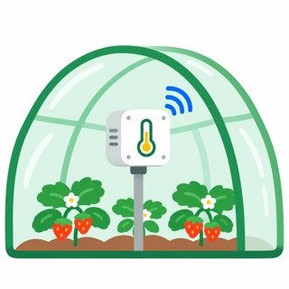
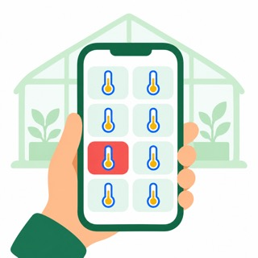

センサー データベース
データベース サーバー
サーバー
画面1件の記録は，旅の途中で
どんな形をしている？
アプリの起動
VS Codeサーバーもセンサーも，VS Code の下のターミナルで
画面の見本（どこに打つ？）
▸ data
▸ static
app.py
sensor.py
名前@PC名:~/berry-watch$ python3 sensor.py 1号棟：10.2℃，75.3% を送信
bash
下のターミナル：1つ目＝サーバー，2つ目＝センサー（右の一覧で切り替え）
-
Ubuntu で実行 → VS Code が開く
cd ~/berry-watch && code . -
メニュー「ターミナル」→「新しいターミナル」（1つ目＝サーバー）
docker compose up -
ターミナル右上の ＋（2つ目＝センサー）
python3 sensor.py -
ブラウザで localhost:8000
うまくいかないとき
No such file or directory
→ アプリが未取得．第2回の「アプリの取得」から
左下に「WSL: Ubuntu」が出ない
→ VS Code を閉じて，1-1 をもう一度
permission denied（docker）→ メンターと確認
8棟の温度の表示
記録1件＝項目名付きのカード
辞書：項目名で取り出す．リストは番号で取り出す
画面に出るのは？
答えを確認
PC の中の地図
← フォルダを共有
今日見る3か所：箱の中のサーバーが書く house.db／手元の履歴 .git／GitHub の手本の Issue・PR
表＝カードの束
VS Code1行＝カード1枚．列＝項目名
左の一覧 →
data→house.db左上の一覧 →
readings
うまくいかないとき
文字化けした画面 → 拡張機能「SQLite Viewer」がない．第2回の ⑥-3
センサーの記録の行
サーバーの返事＝封筒の中身
ブラウザlocalhost:8000/api/houses/3/today を開く
1行で出たら，上の「プリティプリント」（整形）にチェック
画面が裏で受け取る封筒の中身．形は辞書と同じ（JSON）
URL の 3 を 9 にしたら？
{"detail":"9 という棟はありません"}3号棟のカードと数値が一致
履歴＝変更のアルバム
VS Codeソース管理 → 上の Git Graph → 1行＝1枚の写真（コミット）
「センサーの送信間隔を10分から1分に変更」→
sensor.py-INTERVAL_SECONDS = 600 # 送信間隔（秒） +INTERVAL_SECONDS = 60 # 送信間隔（秒）
9月の変更を記入
記録を数える
入力は受け取り済み（readings に，辞書のリストで）．続きを書く
問1 3号棟の記録の数
記録のうち，house_id が 3 のものの数を出力
4 3 7.2 4 9.1 3 7.5 1 10.0
2
ヒント
for reading in readings: で1件ずつreading["house_id"] == 3 なら数を増やす（== は「等しい」）
解答例
問2 3号棟の最低（続き）
3号棟の記録の中で，最低の温度を出力．3号棟の記録は必ず1件以上
4 3 7.2 4 6.1 3 7.5 1 10.0
7.2
ヒント
先に3号棟の温度だけのリストを作る → 先頭を仮の最低にして，for で比べる
リストへの追加は リスト.append(値)
解答例
問1 が全問正解（問2 は続き）
手応えメモ
このブラウザに保存．第11回で並べる
3つとも記入
 第5回 完了
第5回 完了
データと履歴を読めた
- 記録1件＝項目名付きのカード（辞書）
- 表＝カードの束，返事＝封筒の中身
- 履歴＝変更のアルバム
終了
各ターミナルで Ctrl + C → VS Code・ブラウザを閉じる